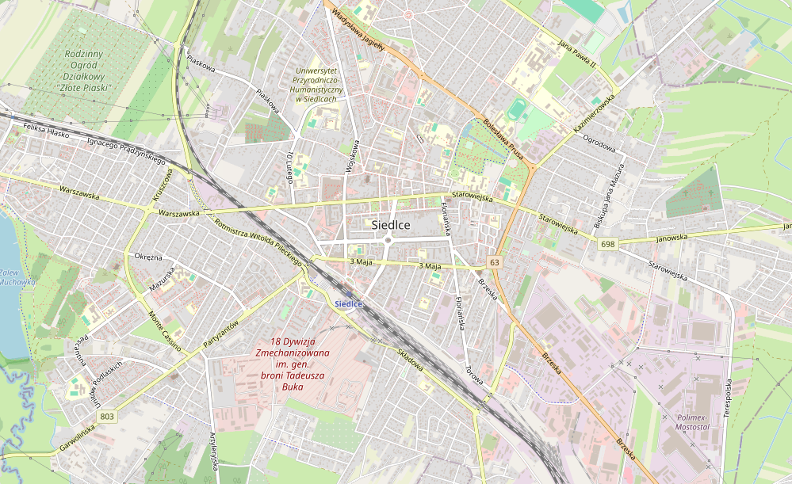

Siedlce , a Masovian province, is located in east-central Poland and is an economic centre for the eastern section of the province with the cities main sources of income being food processing, textile milling and toy production. The city lies on on top of the Warsaw-Moscow road and rail-line and is a great place to stop mid travel to re-live the history of the City.
Although the size of the city may appear small, it most definitely will not disappoint. When you arrive by train, you are automatically in the centre of the city and can find multiple places to visit and places to have fun at! To see more visit the 'Visit' page!